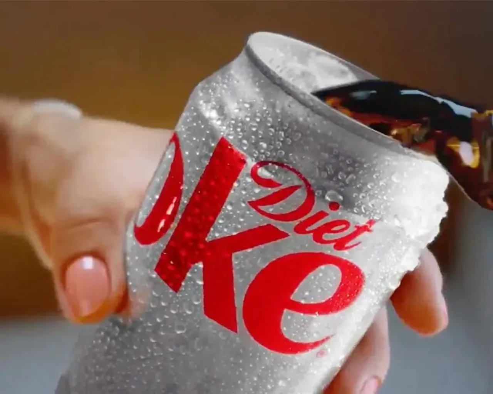

I drink Diet Coke almost every day. In fact, I have a can of it next to me right now! It’s the cherry flavor, which I don’t like as much as just regular Diet Coke, but it’ll do in a pinch. Often I’ll end up drinking two or three cans of Diet Coke in one day.
I know it isn’t good for me, and I’ve honestly been trying to limit my intake. No matter how good it tastes, I can’t deny that it would be best for my health if I drank more water and less Diet Coke. Hopefully one day that fact will crystallize for me, but until then I’m more than happy to continue drinking my sweet, distinctly-flavored vice of a beverage.
Here are a few things I love about Diet Coke specifically: